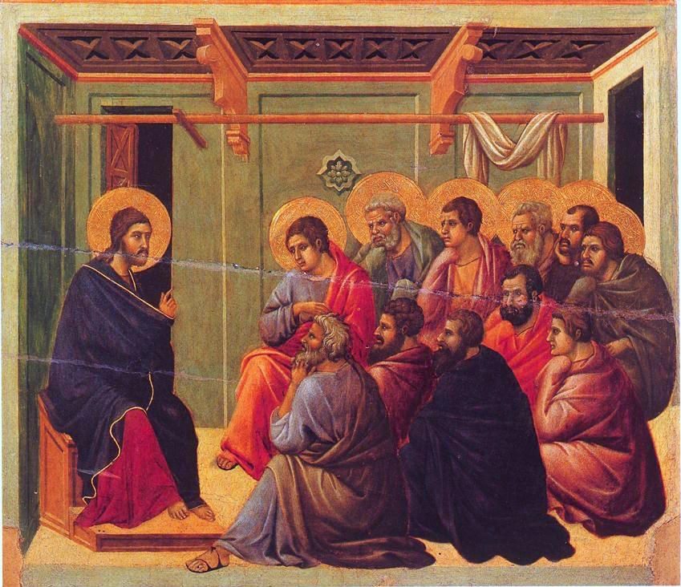

John 14 — The Mister Translation

This is the panel painted for this chapter. Duccio’s Maestà was a double-sided altarpiece for the high altar of Siena Cathedral, and the back carried the Passion in scenes. This is the one that falls between the supper and the garden — which is to say, John 14 to 17.
⚠ Notice what he left out. There is no table, no bread, no cup, no basin, no kiss, no torchlight. Everything a painter would normally reach for to make a farewell dramatic is absent. Christ is sitting down, talking, and the apostles are listening badly — several of them are turned toward each other rather than toward him, which is exactly the chapter, where Thomas, Philip and Judas each interrupt with a question that shows they have not followed.
And the room is shut. Two doorways, both dark; a curtain looped up over a rail; a plain wall. Nothing in the picture is going anywhere. The chapter’s last line is get up, let us go from here — and Duccio paints the moment before that as complete stillness.
⚠ The altarpiece did not survive intact. The Maestà was taken off the high altar in 1506 and sawn apart in 1771 to separate the front from the back; panels were sold off and are now scattered between London, Washington, New York and Fort Worth. This one stayed in Siena. The picture of the farewell was itself cut out of the thing it belonged to.
{kind=link}
Translator’s Notes
1 — ⚠ “Let not your heart be troubled”: who else is troubled in this Gospel?
The verb is tarassō, and John has used it before. It occurs six times in this Gospel. Once of the water at the pool of Bethesda (5:7). Three times of Jesus himself — he “troubled himself” at Lazarus’ tomb (11:33), “now my soul is troubled” (12:27), and “he was troubled in spirit” ten verses before this one, as he named his betrayer (13:21). The remaining two are here, at verse 1 and verse 27, bracketing the chapter.
So the sentence is not a man with a steady pulse telling frightened people to calm down. It is the fourth occurrence in four chapters, and the first three were his. Most versions keep the word in all six places; almost nobody points out that they are the same word.
⚠ And the two verbs in the second half are genuinely ambiguous. Pisteuete… pisteuete — the form is identical for the statement (“you believe”) and the command (“believe”), so Greek offers four possible readings and no way to choose between them. KJV takes the first as a statement and the second as a command: “Ye believe in God, believe also in me.” Most modern versions make both commands. This page makes both commands too, because the word order pivots around the verbs (verb–object, then object–verb), which suits a matched pair — but that is a judgement about rhythm, not about grammar, and the KJV’s reading is fully available.
2–4 — ⚠ “Many mansions”: where that word came from, and the only other place it appears
The Greek is monai pollai, and monē occurs twice in the entire New Testament — both of them in this chapter. Here at verse 2, and again at verse 23. That second occurrence is the evidence, and it is sitting twenty-one verses away.
Where “mansions” came from. Monē is the noun from menō, to remain — a place where you stay. Jerome rendered it into Latin as mansio, from manere, which is the same idea exactly: in Latin a mansio is a stopping-place on a journey, the overnight halt, a stage on the road. The English word “mansion” is that Latin word, and it did once mean a dwelling of no particular grandeur. It does not mean that now, and it has not for a long time.
⚠ The 1599 Geneva Bible got it right and the KJV changed it. GNV «In my Fathers house are many dwelling places» — the version the Pilgrims carried, printed twelve years before the King James, with no problem at all. Then KJV and ASV print “many mansions,” and DRB does too, following the Vulgate’s own mansiones. Among the modern witnesses, NWT has “many dwelling places” and NIV “many rooms.”
⚠ And here is the decisive part. At verse 23 the same word appears — “we will come to him and make our monē with him” — and not one version on this shelf calls that a mansion. They all say home, or abode, or dwelling. The same translators who made it a great house in verse 2 knew perfectly well what it meant twenty-one verses later, where it plainly could not be a building at all.
So this page prints “many places to stay” here and “make our place to stay” at verse 23, so that an English reader can see they are one word. It is clumsier than “rooms.” That is the trade, and it is deliberate.
⚠ One small word decides whether the rest of the verse is a question. The oldest text reads eipon an hymin hoti poreuomai — “would I have told you that I am going to prepare a place for you?” The Byzantine manuscripts have no hoti, which is why KJV can read it as two sentences: “if it were not so, I would have told you. I go to prepare a place for you.” With hoti the whole thing is one question — and an awkward one, because Jesus has not said this before anywhere in John. Printed here with the hoti, as a question, and the awkwardness left standing.
An echo worth having. Six chapters earlier: “the slave does not remain in the house forever; the son remains forever” (8:35). Same two words — oikia and menō — that verse 2 puts together as house and places-to-remain.
5–7 — “I am the way, the truth, and the life” — and the verse the manuscripts cannot agree on
Thomas asks the honest question and is not rebuked for it. “We do not know where you are going” is simply true, and the famous sentence is an answer to it, not an announcement made into the air.
Greek puts the article on all three. Hē hodos kai hē alētheia kai hē zōē — the way and the truth and the life, not “a way.” English can carry that, and every version does.
⚠ Verse 7 is a rebuke in some manuscripts and a promise in others. This is not a shade of meaning; it is the opposite sentence.
Reading one (printed here, and in the SBL text this page follows): ei egnōkeite me, kai ton patera mou an ēdeite — a past tense with an, which in Greek marks a condition contrary to fact. “If you had come to know me, you would have known my Father as well” — i.e. you have not. A reproach, aimed at the disciples, one verse before Philip proves it.
Reading two (Nestle-Aland 28): ei egnōkate me, kai ton patera mou gnōsesthe — present and future. “If you have come to know me, you will know my Father also” — a promise.
The manuscripts are genuinely divided and no argument settles it. This page prints the rebuke because that is the text it is translating, and prints this note because a reader consulting a modern study Bible will find the promise and should know why.
Two different verbs for “know” in one sentence — ginōskō (come to know, recognise) and oida (know, be aware). English has one word and loses the pairing; nothing on this shelf tries to keep it.
8–11 — Philip asks to see the Father, and a word starts moving through the chapter
“Show us the Father, and that is enough for us.” Arkei hēmin — it suffices, we will ask nothing more. It is a reasonable request and it lands badly.
“I am with you all this time” is present tense in Greek, not past — the whole stretch of it is still going on as he speaks.
⚠ Menō, and where it is going. Verse 10 says the Father, remaining in me, does his works. The verb turns up three times in this chapter — here, at verse 17 of the Spirit, and at verse 25 of Jesus himself — and then eleven times in the next chapter, where it becomes a command: remain in me. John uses it forty times, more than any other book in the New Testament. This page renders it “remain” every time so the thread stays visible, rather than switching to “abide,” “dwell,” and “live in” as the context suggests. It is the same word doing the same work in every case.
12–14 — ⚠ “Greater works” — and the one verse in John that may tell you to pray to Jesus
“Greater than these.” Meizona. The same comparative appears at 5:20, where the Father shows the Son greater works than these — so what is promised to whoever believes is the word already used of what the Father gives the Son. What “greater” means is left entirely open, and the reason given is not power but departure: because I am going to the Father.
⚠ Verse 14 has a word in it that half the shelf does not print. The oldest manuscripts read ean ti aitēsēte me en tō onomati mou — “if you ask me for anything in my name.” The Textus Receptus behind the King James has no me, and so:
KJV “If ye shall ask any thing in my name” · GNV the same · ASV the same · NWT the same. And then DRB, alone among the older versions, «If you shall ask me any thing in my name» — because the Vulgate has it. NIV has it too.
⚠ Why it is probably original. “Ask me… in my name” is a strange thing to say — strange enough that a copyist could drop the word almost without noticing, and strange enough that nobody would add it. The harder reading is usually the older one. And if it stands, this is the only place in John where prayer is addressed to Jesus rather than through him.
A distribution worth knowing about. John has two verbs for asking, and in this Gospel they never swap places. When the disciples ask, it is aiteō (14:13, 14:14, 15:7, 15:16, 16:23, 16:24, 16:26). When Jesus asks the Father, it is always erōtaō (14:16, 16:26, 17:9, 17:15, 17:20) — never once aiteō. At 16:26 both stand in a single verse: you will ask (aiteō) in my name, and I do not say that I will ask (erōtaō) the Father for you. English says “ask” for both and the pattern vanishes. Grammarians have argued for a century about whether the distinction carries any weight in Koine; that it is perfectly consistent across John is not in doubt, and a reader can decide what to make of it.
15–17 — ⚠ Comforter, Helper, Advocate, Counselor, Paraclete: the widest split on the whole shelf
Paraklētos occurs five times in the New Testament. Four are in this discourse — 14:16, 14:26, 15:26, 16:7 — and the fifth is 1 John 2:1. That fifth one settles more than any dictionary can.
⚠ At 1 John 2:1 the paraklētos is Jesus. “If anyone sins, we have a paraklētos with the Father — Jesus Christ the righteous.” And there, every version on this shelf says the same thing: KJV, ASV, DRB and NIV all print “advocate.”
But at verse 16 those same versions print something else. KJV, GNV and ASV say “Comforter”; DRB transliterates and says “Paraclete”; NWT says “helper.” One Greek word, two English words, inside a single Bible.
⚠ And that costs the reader the argument. Verse 16 does not say “a paraklētos” — it says ANOTHER paraklētos (allon). Another implies a first. 1 John 2:1 says who the first was. A reader with a King James in front of them cannot see that, because the two verses no longer share a word.
So this page uses Advocate in all of them — not because it is a full translation, but because it is the one English word that still works at 1 John 2:1, where “Comforter” would be odd and “Helper” thin. NIV made exactly this change in 2011, from “Counselor” to “Advocate”; NWT keeps the link by a different route, using “helper” in both places. What “Advocate” loses is the consolation the KJV was reaching for, and a paraklētos does console. There is no English word that carries the legal sense, the consoling sense and the summoned-alongside sense at once, which is why there are five candidates and no winner.
⚠ The pronouns in verses 17 and 26 do not agree with each other, and that is in the Greek. Pneuma is a neuter noun, so verse 17’s pronouns are neuter: the world cannot receive it, because it neither sees it nor knows it. English cannot print that without three “it”s pointing at two different things, so this page prints “him” and flags it here. But then at verse 26 John writes ekeinos — a masculine demonstrative — with that same neuter noun as its antecedent. It happens again at 15:26 and 16:13.
Both facts get quoted, usually by people arguing opposite cases, and both are true: the noun is neuter and the demonstrative is masculine, in the same chapter. This library prints both and takes no vote.
Beside you now, in you later. Verse 17 ends par’ hymin menei kai en hymin estai — present, then future. The oldest reading has that shift; a smaller group of manuscripts reads a second present and flattens it.
18–24 — Not “comfortless” — ORPHANS. And the word from verse 2 comes back
The Greek word is orphanous, and it is the ordinary word for a child with no parents. It appears twice in the New Testament: here, and at James 1:27, “to look after orphans and widows in their distress.”
The shelf scatters: KJV “comfortless” — which is consistent with having chosen “Comforter” two verses earlier, and wrong twice for the same reason. ASV “desolate.” GNV “fatherless,” which is closer. NWT “bereaved.” And DRB, alone among the older versions, simply “orphans.” The plain word is the right one and it is doing real work: he has spent this chapter talking about his Father’s house, and now promises not to leave them without a father.
John stops the sentence to say which Judas. “Judas — not Iscariot — says to him.” The other one walked out thirteen verses earlier, and the narrator is taking no chances.
⚠ Verse 23 is the second and last monē in the New Testament. “We will come to him and make our place to stay with him” — the word from verse 2, and the direction has reversed. In verse 2 he goes away to prepare a place for them; in verse 23 he and the Father come and take up residence in them. See the note on verse 2 for what that does to “mansions.”
Singular, then plural. Verse 23: whoever loves me will keep my word. Verse 24: whoever does not love me does not keep my words. One thing to hold onto and many things to fail at, in consecutive sentences.
25–27 — “Peace I leave with you” — and the chapter closes its own bracket
“While remaining beside you.” Menō the third and last time in this chapter — and the tense is doing the work: he is still here, and the sentence already knows he will not be.
The Advocate will “remind” them. Hypomnēsei, to bring back to mind — not to reveal something new. Whatever else this promise covers, what it explicitly covers is the recovery of what he already said.
“Peace” is also just goodbye. Shalom is the ordinary Hebrew and Aramaic greeting and farewell, and the first half of verse 27 is what anyone leaving a room says. Then he specifies which kind he means, and it is not the world’s kind — the sentence turns an ordinary courtesy into the thing itself. The versions are unanimous here; the point is not a rendering but the fact that the line is a farewell formula being taken seriously.
⚠ And the chapter’s first sentence comes back word for word. “Do not let your heart be troubled” — verse 1 and verse 27, identical in Greek, framing everything between them. The second time it adds a verb: mēde deiliatō, and do not be cowardly. That verb occurs nowhere else in the New Testament (its adjective does — of the disciples in the storm at Matthew 8:26 and Mark 4:40, and in the list at Revelation 21:8). The shelf all says “afraid,” which is right and slightly gentler than the Greek.
28–31 — ⚠ “The Father is greater than I”, and a chapter that ends without ending
⚠ Ho patēr meizōn mou estin. This is the verse the fourth-century Arian controversy turned on, and every version on this shelf translates it the same way, because there is nothing to argue about in the Greek: meizōn is a plain comparative and it says what it says. What is argued is what is being compared.
The Nicene answer — Athanasius, later Augustine, and the standard reading since — is that it compares the Son as sent and incarnate to the Father, not one nature to another. The Arian answer was that it compares two beings, and that the lesser one is not God. The verse by itself does not decide between them, and this translation does not soften it in either direction.
⚠ But notice what else is in this chapter. “I am in the Father and the Father is in me” (vv10–11). “Whoever has seen me has seen the Father” (v9). Anyone quoting verse 28 on its own, and anyone quoting verse 9 on its own, is quoting a chapter that contains both.
“The ruler of this world.” Third and last time in John — 12:31, here, and 16:11. And what is said of him is a double negative doing the work of an emphatic: en emoi ouk echei ouden, “in me he has nothing.” Rendered “he has no hold on me” here, which is the sense; the literal has a flatness English does not reproduce.
⚠ And then: “Get up, let us go from here” — followed by three more chapters of talking. They do not actually leave until 18:1. This is the most-discussed seam in the Gospel. Some read chapters 15–17 as material inserted later into a discourse that once ran straight from 14:31 to 18:1; others read it as staged — they stand up, and he goes on speaking as they go.
The distinction that usually gets blurred: no manuscript marks a join here. There is no copy of John with chapter 14 running into chapter 18, and no ancient witness to a shorter discourse. The seam is a literary observation about how the text reads, not a textual one about what the manuscripts contain — and those are very different kinds of claim. This page prints the text as every manuscript has it and lets the sentence sit there being odd.
Patterns worth carrying forward.
⚠ Two words in this chapter occur almost nowhere else. Monē, the word the King James turned into “mansions,” appears twice in the whole New Testament and both times here — verse 2 and verse 23 — and the second occurrence is what shows the first cannot mean a great house. Deiliatō at verse 27 occurs nowhere else at all.
⚠ The paraklētos problem is a shelf problem, not a Greek problem. The word is used five times: four in this discourse and once at 1 John 2:1, where it is Jesus. Versions that print “Comforter” here and “advocate” there have quietly removed the reader’s ability to notice that verse 16 says “another paraklētos.” This page uses Advocate throughout for that reason, and the note says what the choice costs.
⚠ Where the manuscripts genuinely divide. Verse 7 is a rebuke in one text and a promise in another. Verse 14 either does or does not contain the word me — and if it does, it is the only place in John where prayer is addressed to Jesus. Verse 2 either does or does not contain hoti, which decides whether the sentence is a question. Three real forks in thirty-one verses, and no version prints more than a footnote about any of them.
Threads planted here, paid off next door. Menō — remain — appears three times in this chapter (vv10, 17, 25) and eleven times in chapter 15, where it stops being a description and becomes a command. John uses the verb forty times, more than any other book. The rendering is kept as “remain” at every occurrence so the thread survives into English.
Renderings chosen. “Many places to stay” (v2) and “make our place to stay” (v23), matched on purpose so one Greek word reads as one English phrase. Advocate for paraklētos. Orphans at v18, which is simply what the word means. “He has no hold on me” at v30 for a Greek double negative English cannot copy. And “the Father is greater than I” at v28, unsoftened.
Worth not skipping. Jesus is “troubled” three times in the three chapters before he tells them not to be. Thomas asks a plain question and gets the most quoted sentence in the Gospel. The chapter closes its own bracket — verse 27 repeats verse 1 word for word. And then it says get up, let us go from here, and carries on for three more chapters.
⚠ A note on order: John stands on these pages at chapters 1–4 and now 14 — a jump to one of the most-searched chapters in the Gospel. Two threads are open: next in sequence is John 5, and this chapter opens the Farewell Discourse, which continues at John 15.